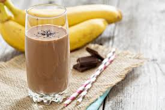

Chunky Monkey Milkshake
Home

Description
I am not a huge sweets fan, but I love this milkshake so much. I used to purchase it all the time
until I learned how simple it was to make at home. You do not need elaborate ingredients and you can substitute items as well; it is a
pretty versatile recipe in my opinion.
Ingredients
- Bananas (frozen)
- Cocoa powder
- Milk
- Peanut Butter
- Vanilla
- Blender/Food processor
Some Substitutions
- If you don't have frozen bananas, you can always add ice instead.
- For extra protein and less ingredients to buy, use PBfit cocoa powder.
Directions
- Add all the ingredients to your blender or food processor.
- Blend until smooth, about 2-3 minutes.
- Pour into glasses and serve.